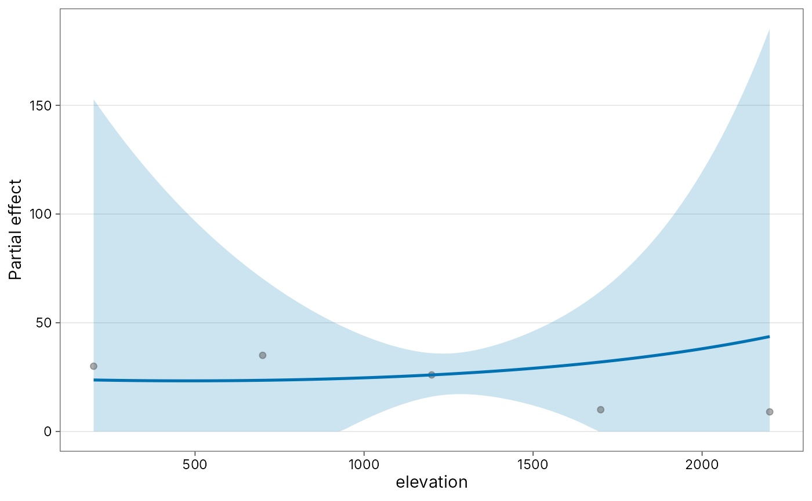
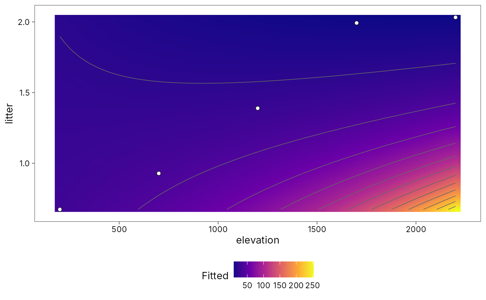

Partial-effect and two-predictor surface plots (visreg / plotmo style)
Source:R/plot-partial.R
plot-partial.RdPublication-ready ggplot replacements for the visreg and plotmo
workflow used in Moses et al. (2021). plot_partial() draws a
one-predictor conditional (partial) effect with optional residuals and
confidence band. plot_surface() draws a two-predictor response surface
as a filled contour (the pattern that paper built by converting
visreg::visreg2d() into ggplot by hand). No visreg or plotmo dependency.
Usage
plot_partial(
model,
x,
data = NULL,
by = NULL,
residuals = FALSE,
se = TRUE,
level = 0.95,
n = 100,
...
)
plot_surface(
model,
x,
y,
data = NULL,
n = 40,
type = c("contour", "persp"),
points = TRUE,
...
)Arguments
- model
A fitted model (
lm,glm,negbin,gam, ormodel_count()/td_count_model).- x, y
Focal predictor names (character) or bare names.
- data
Optional data frame used to build the prediction grid. Defaults to
model.frame(model).- by
Optional conditioning variable for panels (partial plots).
- residuals
Overlay partial residuals?
- se
Draw a pointwise confidence band (partial) or skip (surface)?
- level
Confidence level for the band.
- n
Number of grid points per axis.
- ...
Passed to
predictmethods.- type
"contour"(filled contours; default) or"persp"(basegraphics::persp()drawn to the current device and returned as a recorded plot list; prefer"contour"for publication ggplot output).- points
Overlay observed (x, y) points on the surface?
Value
A ggplot object (plot_partial, plot_surface with
type = "contour"). For type = "persp", a list with the persp
transformation matrix and the prediction grid (still no plotmo).
References
Moses, J., Fayle, T. M., Novotny, V. and Klimes, P. (2021). Elevation and leaf litter interact in determining the structure of ant communities on a tropical mountain. Biotropica, 53, 906-919. doi:10.1111/btp.12914
Examples
ants <- png_ants |>
dplyr::group_by(site, elevation) |>
dplyr::summarise(richness = dplyr::n_distinct(species), .groups = "drop")
ants$litter <- 1 + ants$elevation / 2000 + stats::rnorm(nrow(ants), 0, 0.3)
fit <- model_count(ants, richness ~ poly(elevation, 2) * litter,
family = "poisson")
plot_partial(fit, elevation, residuals = TRUE)
#> Warning: prediction from rank-deficient fit; attr(*, "non-estim") has doubtful cases

plot_surface(fit, elevation, litter)
#> Warning: prediction from rank-deficient fit; attr(*, "non-estim") has doubtful cases
